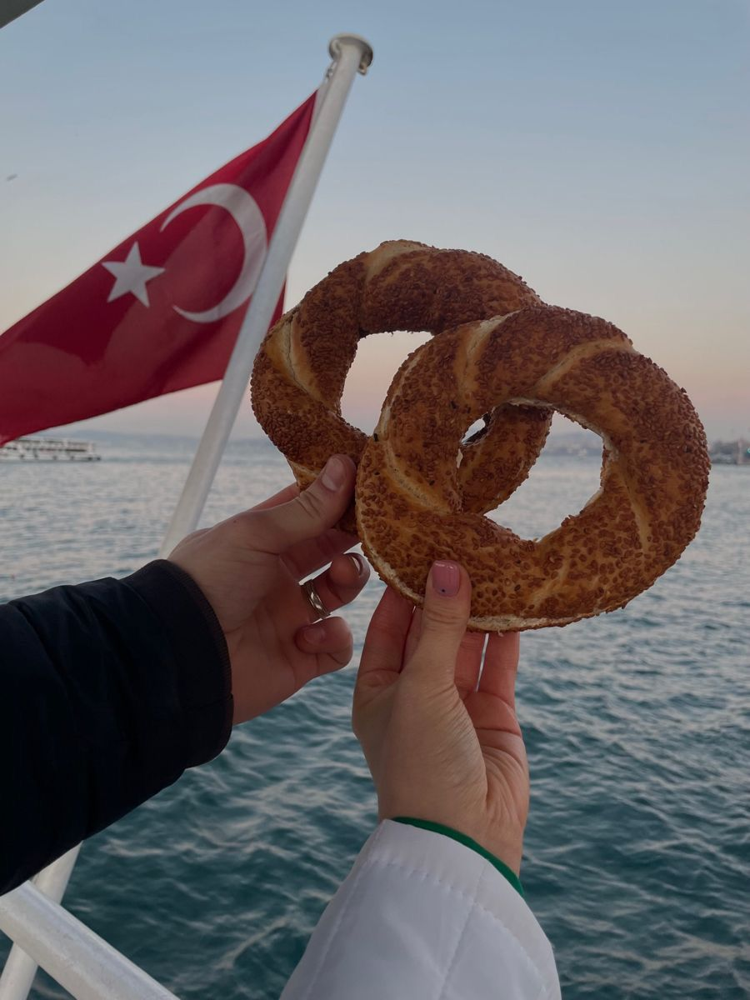
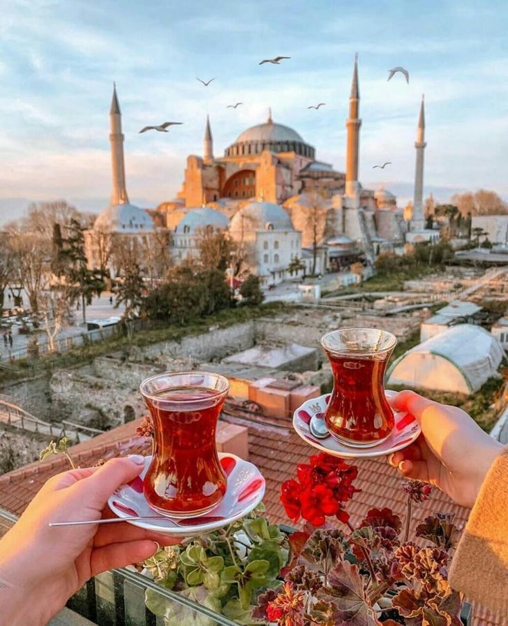

Photo Gallery of Turkey
Explore the beautiful landscapes, cities, food and architecture of Turkey through this curated photo gallery.






Discover Turkey’s most beautiful destinations, rich culture, ancient history, and breathtaking landscapes. Travel through Istanbul, Cappadocia, Pamukkale, Antalya, and more.
Explore Turkey DestinationsExplore Türkiye’s most iconic cities and breathtaking landscapes, where history, culture, and natural beauty come together.


Everything you need to know before traveling to Turkey, including visas, transport, food, and best seasons.

Most travelers can enter Turkey visa-free or with an e-Visa. Ensure your passport is valid for at least 6 months.

Domestic flights, buses, trains, metros, and taxis make traveling around Turkey easy and affordable.

Enjoy kebabs, baklava, and Turkish tea across Turkey. Respect local customs, especially at mosques.

Spring and autumn offer pleasant weather in Turkey. Summer suits beaches, winter is ideal for snow lovers.
Explore the beautiful landscapes, cities, food and architecture of Turkey through this curated photo gallery.